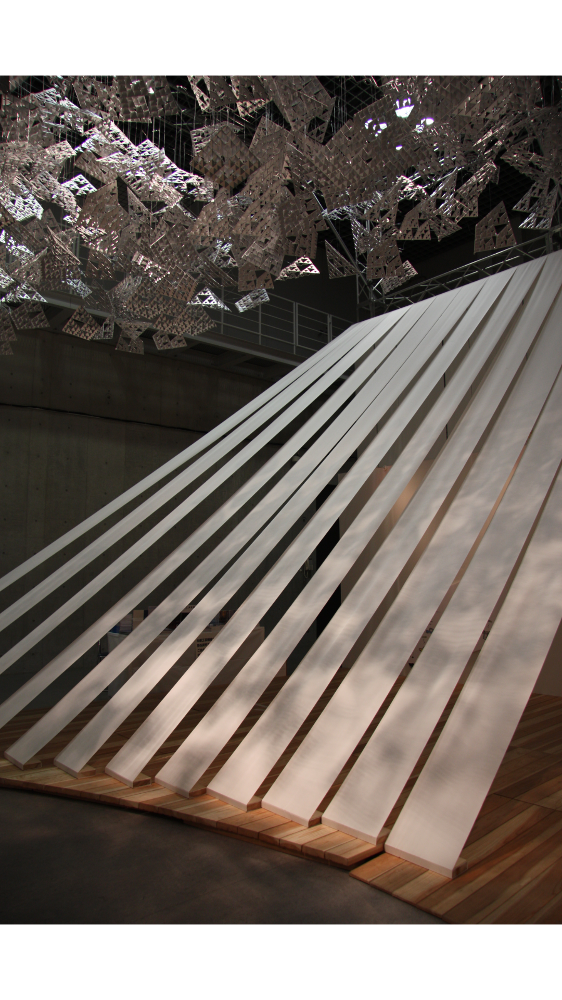
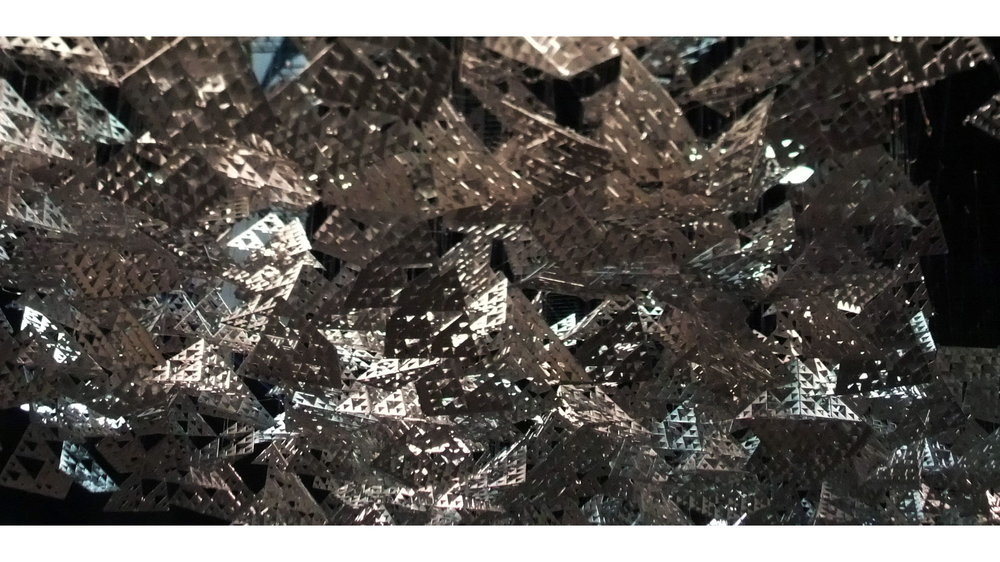
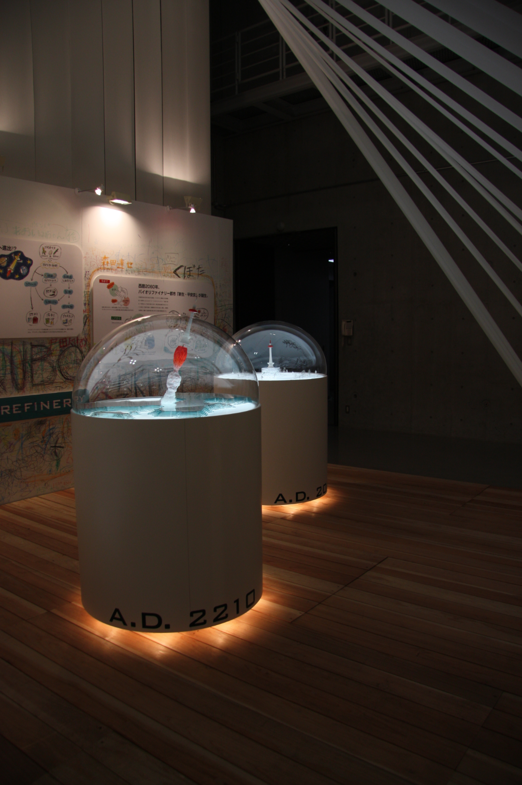
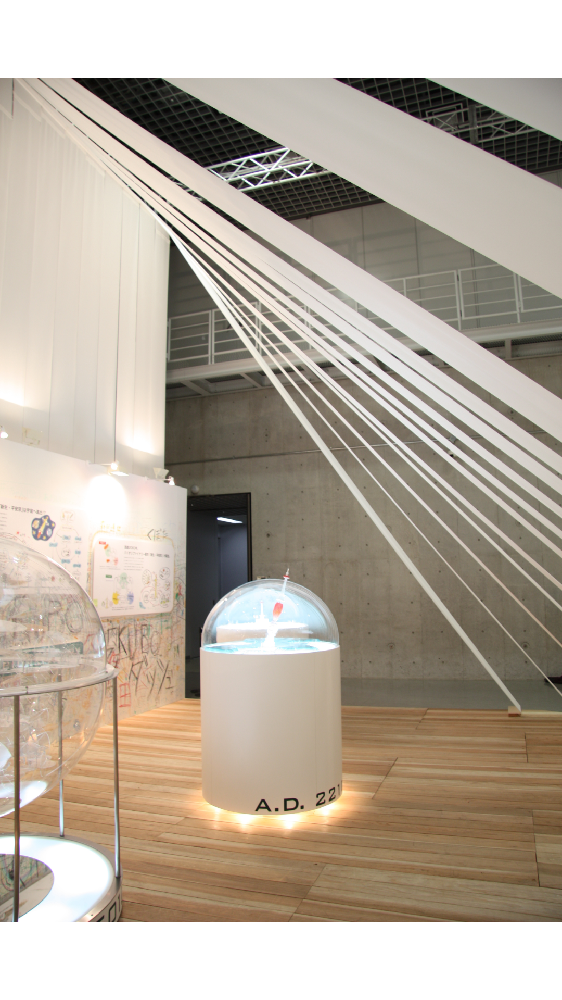

College Science Fiesta
Purpose
The theme of this exhibition was "Expanding Sustainability with Design in the Future of ECO." It was a group project held in Tokyo that involved 30 students from the Design program at the School of Science and Technology, Kyoto Institute of Technology. The students worked in teams independently and under professors’ guidance.
The project was massive, so several sections were divided and assigned to dierent teams of students. I participated in cutting one of the content materials, cotton cloth, in the background preparation, then I joined the team and transitioned with them from Kyoto to Tokyo. Meanwhile, other works were constructed by dierent teams, such as decorating the contents of the globe for one of the displays in the event, and creating metal triangles and other pre production assignments.
Background
This event centered on how shadow would draw themselves in and how light would lead themselves. By using numerous light-coloured cotton cloths and situating them under the lights, shadows were created and their forms altered when people moved from place to place. Meanwhile, countless triangular objects that were made of metal were hung on the ceiling. With multiple holes in each metal medium, light was able to pass it through and nally hit on the oor to create random spots of light in shadow areas. Finally, using wood for ooring completed the core idea of sustainability and maintained the earth tone palette to give the entire display a harmonized atmosphere.
Design Process
In the production process, it was a great experience to work with other design students. By participating in multiple group discussions, I gained much experience in understanding how others think, how to approach a design layout, how to estimate and allocate time for each section, and how to manage deadlines before the exhibition starts. When working in production, one must implement structures, draw out blueprints, note down constraints, communicate with transportation personnel, and so on. Each stage was assigned by a group leader who managed the progress of the team’s work, and reported to the professors to coordinate everything so that in the end, the nal exhibition appeared seamless and professionally produced.
Overall Event
I worked with many students, all of whom were enthusiastic to become professional designers. Working with all the design students was wonderful, especially because the o-campus exhibition was on such a grand- scale. Before transporting each section of the display content into the gallery of the museum, students were required to be fully knowledgeable concerning the individual sections and be able to explain the background of the project and its concept. All the designs, creations, events, and exhibitions had a meaning that the creators wanted to pass on to the audience. Particularly impressive was the teamwork involved in managing the event from start to nish with numerous students. The experience no doubt left an indelible mark on the minds of the students, myself included, for the remainder of their studies.
Event Information
| Time | Location | Location Link |
|---|---|---|
| November 20-29, 2009 | National Museum of Nature and Science, Tokyo, Japan | https://www.kahaku.go.jp/english/ |
Photo Footage
Cell
(+886) 900-789753Address
9F., Daye Rd. Section 1,Taoyuan District, Taoyuan City 330-49
Taiwan (R.O.C.)